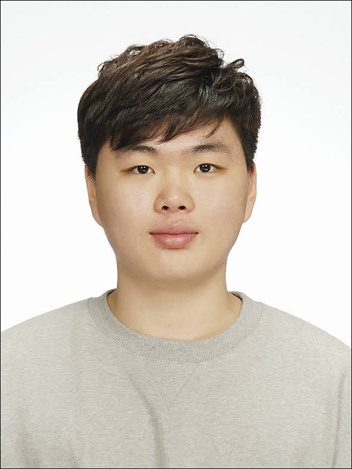

A Survey on Leveraging Code Graphs for LLM-based Automated Program Repair Best Paper Award
Shinyeob Kang, Jikwang Lee, Hyeokmin Kwon, Jaechang Nam · KCSE 2026 Proceedings, p. 170

Computer Science Researcher & Software Engineer
Handong Global University
I am a Computer Science student and undergraduate researcher at Handong Global University. I build intelligent software systems that make complex engineering work more reliable.
My interests lie at the intersection of software engineering and artificial intelligence, particularly LLM-based program repair, code intelligence, developer agents, and dependable systems. I enjoy taking a problem from its research question to a working implementation — designing the architecture, building the feedback loop, and learning from where the system breaks.
As an undergraduate researcher in the Intelligent Software Engineering Lab, advised by Prof. Jae Chang Nam, I studied automated software engineering, code graph analysis, and AI/ML environment automation. I also contributed to static-analysis-based malware detection research in collaboration with UMV.
Shinyeob Kang, Jikwang Lee, Hyeokmin Kwon, Jaechang Nam · KCSE 2026 Proceedings, p. 170
Hyeokmin Kwon, Jikwang Lee, Shinyeob Kang, Yongbean Chung, Jaechang Nam · KCSE 2026 Proceedings, p. 198
An LLM-based agent that analyzes source imports, dependency files, and installation logs to generate and iteratively repair Conda environments.
Research into static-analysis features and benchmark pipelines for Linux ELF, Windows PE, PDF, Word, and Excel malware.
An MQTT delivery system with active/backup failover, QoS 1, store-and-forward, RTT-based routing, and duplicate filtering.
A LoRa sensing network with multi-hop relay, ACK-based delivery, CRC validation, and a real-time FastAPI dashboard.
Trainee, 13th Cohort
Research Assistant · Collaboration with UMV
Undergraduate Researcher · Handong Global University
Teaching Assistant · Handong Global University
Google AI Agent Program & Competition · Context Guard
Capstone Festival · Mitigating AI Hallucination
KCSE 2026 · Code Graphs for LLM-based APR Survey
Upstage AI Agent Hackathon · EnvAgent using n8n
Software Festival, Convergence Track · Vintan and Juum